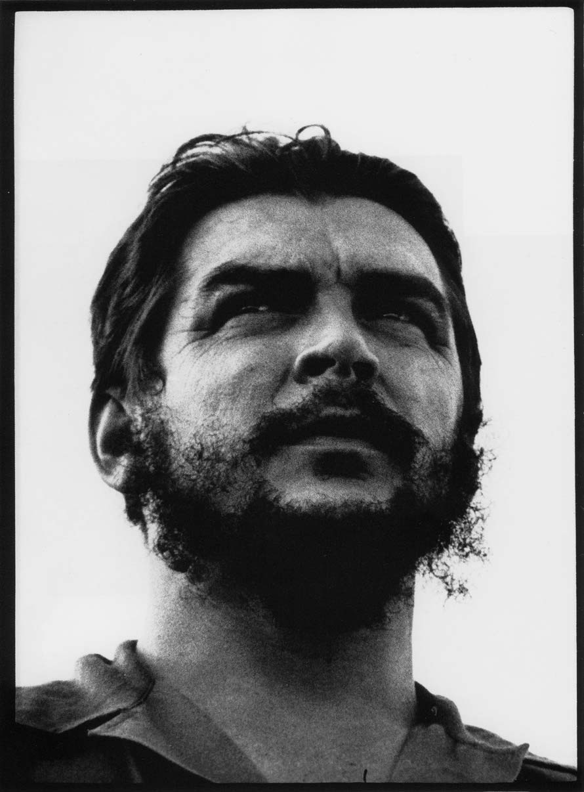

切·格瓦拉
（1965年4月11日发表于《绿橄榄》杂志，中译文原载《黑板报文艺》，2000年4月）
《绿橄榄》杂志注：格瓦拉少校这篇专门写给乌拉圭《前进》周刊的文章，论及一系列有关社会主义建设和新人培养的问题，我们的读者对阅读与研究这篇文章一定很感兴趣。
乌拉圭蒙得维的亚，林空街557号《前进》周刊
卡洛斯·基哈诺
尊敬的同志：
这篇文章，我是在旅行非洲期间写成的，目的是要履行我的诺言，虽然履行的时间晚了些。我打算照文章的标题来谈。我想这对乌拉圭读者来说，是有意义的。 常常听到资本主义的代言人举出一个论据来对社会主义进行思想斗争，这个论据就是说，我们的这个社会制度以及我们所处的社会主义建设时期，其特点就是为了国家而否定个人。我不打算单纯从理论上批驳这一理论，我只想确定一下古巴所正经历的事实，再加上一些一般性的议论。我要扼要地谈一下我们在取得政权之前和之后革命斗争的历史。 如众周知，以1959年1月1日为最高峰的革命行动，它开始的准确日子，是1953年7月26日，由菲德尔·卡斯特罗领导的一批人在这一天的拂晓，袭击了奥边特省的“蒙卡达”兵营。这次袭击失败了，失败又变成为灾难，幸存者被关到了监狱里，他们得到大赦之后，又重新开始了革命斗争。 这个过程只具有社会主义萌芽，在过程中，人是基本因素。靠的就是人，单独一个个的人，具体的，有名有姓的人，而任何的成败，就取决于人的行动能力。 到了游击斗争阶段。这个斗争是在两个不同的范围中展开的：一个范围是人民，是仍有待于动员的，熟睡中的群众，另一个范围就是他们的先锋，即游击队，这是动员（人民）的动力，是革命意识与战斗热情的产生者，这支先锋队成了一种触媒剂，为胜利创造了必要的主观条件。同样地在这支先锋队中，在我们思想无产阶级化过程的范围内，在我们的习惯头脑发生的革命的范围内，人也是基本的因素。在革命力量中取得了某种高级地位的每一位马埃斯特腊山区战士，都有一整段杰出行动的历史。他是靠这些行动而取得自己的地位的。
那是第一个英雄的时代，当时大家都争先恐后地担负责任更重，危险更大的职责，唯一得到的补偿就是义务的履行。在我们的革命教育工作中，我们常常反复提到这个富有教育意义的题目。当时我们的战士们的行为隐约显露出了未来的人的形象。 在我们的历史的另一些场合，曾重复发生了完全献身于革命事业的事例。在十月危机期间或是在“弗洛拉”飓风的日子里，我们看到全体人民作出了罕见的勇敢牺牲的行动。找到办法来把这种英勇表现在日常生活中永久固定下来，是我们在意识形态方面的基本任务之一。 1959年1月，成立了有爱国资产阶级数名成员参加的革命政府，起义军的存在，作为基本的实力因素，是政权的保证。 接着，发生了严重的矛盾，这些矛盾在1959年2月初步获得了解决，当时菲德尔·卡斯特罗就任总理，统率了政府。到同年7月，当乌鲁蒂亚总统在群众压力下辞职的时候，上述过程大致到了最高峰。 到这时候，在古巴革命的历史中，就明明确确地出现了一个日后不断地一再出现的人物：群众。
这个多方面的人物，并不如某些人所说的那样是一批同属一个范畴（而且是被一个硬建立起来的制度拉平到同一范畴之中）的分子的总和，像一群驯服的羊们。的确，他们毫不动摇地追随自己的领导人，主要是追随菲德尔·卡斯特罗，但是他所取得的信任，其程度是与他充分代表人民的愿望和要求相符合的，与他为了履行自己作的诺言而进行的真诚斗争相符合的。 群众参加了土地改革和管理国营企业的艰巨工作；经历了吉隆滩英勇的斗争；在反对各种由中央情报局武装起来的匪帮的斗争中受到的锻炼；在十月危机中经历了当代最重大的一次关头，而且今天继续在为建设社会主义而工作。 从表面上看来，那批说什么个人被国家压倒的人们，也许似乎言之成理；理论所规定的任务，无论是经济方面的，文化方面的，国防方面的，体育方面的，群众都以无比的热情和纪律来执行。倡议一般来自菲德尔或是革命的最高司令员，然后向群众解释，由群众加以接受。另外一些时候，党和政府吸收一些局部的经验，通过同样的程度加以推广。 但是有时国家是会犯错误的。当犯这样的错误的时候，就可以看到，由于组成集体的每一个分子热情的减低，整个集体的热情也减低了，工作就停顿，一直缩小到举足轻重的程度；这就到了要纠正的时候了。1962年，由于阿尼瓦尔·埃斯卡兰特所强加于党的宗派主义政策，就发生了这样的事。
显然，光是有一套系统，是不足以保证一系列的明智措施的，还缺了一种组织得更加完善的同群众的联系。对这一点，我们在今后的年代中必须加以改善，但是，在来自政府上层的倡议方面，我们目前采用的是一种几乎凭直觉的方法，探听对已提出的问题的反应。 在这方面做得到家的是菲德尔，只有亲眼看他怎样干，才能对他特殊的同人民打成一片的办法作出评价。在大规模的集会上，可以看到一种类似共振的现象，两个振幅彼此引起振动。菲德尔和群众在对话中发生振动，振动的力量越来越强，一直到最后发展到最高峰就以我们斗争与胜利的口号来猛然结束。 一个没有体会过革命经验的人，很难理解个人与群众之间的这种密切的辩证的统一，而作为许多个人的集合体的群众，又同领导人相联系。 在资本主义下，有时也可以看到这种现象，这是在出现了一些有动员人民的本领的政治家的时候，但是，除非这是一个真正的社会性运动（如果这样，用资本主义这个名词就完全适当了），否则，运动的寿命也就同推动运动的人的寿命一样短，或者是只能维持到人民的幻想一样短，或者是只能维持到人民的幻想由于碰到资本主义社会的严酷现实而幻灭的时候为止。在这样的社会里，人受到一种冷酷的安排所左右，这种安排通常是超出他所能理解的范围之外的。已经异化出来的个人，有一条看不到的济带把他同整个社会联结起来，这就是价值规律。这个规律对所有各方面的生活起作用，划定着各方面生活的道路与目标。
一般人看不到的，盲目的资本主义规律，对个人起著作用，而个人却觉察不到。他只看到前面是无边无际的广阔天地。资本主义宣传也把情形描写成这个样子，企图从洛克菲勒的事例（不管是否属实）中引申出一个有关种种飞黄腾达的可能性的教导。至于这要积累多少人的贫困，才能出现一个这样的事例，究竟一个人发这样的一笔大财，它本身就也并不总是有可能把这些概念弄清楚。（本来这里也可以探讨一下帝国主国家的工人如何由于在剥削附属国当中有所参与而在逐渐丧失自己的国际精神，这种情况同时又如何在磨掉本国群众的斗争精神，但是这个题目已超出本文意图之外。） 无论如何，道路被说成是虽有障碍，但从外面看来，一个人只要有必要的品质，就可以克服这些障碍，达到自己的目的。奖赏遥遥在望；道路是孤单的。而且，这是狼与狼之间的赛跑；唯有靠别人的失败，自己才能达到目标。 现在，我试说明，在社会主义建设这出奇怪而动人心魄的戏剧中，作为它的个人，他的既是单独的人又是集体的一员的双重身份，是怎样的。 我认为，应该干脆承认他是不完善的，是非制成品。昔日的包袱转移到了现在个人意识当中，必须不断地进行工作，来根除这些包袱。 这个过程是双重的，一方面是社会以自己的直接间接教育起著作用，另一方面个人又经历着一个自觉的自我教育过程。
正在形成中的社会，不得不同过去的东西进行艰苦的比赛。过去的东西不仅反映在个人的意识当中，表现为那种一贯以把个人孤立起来为方针的教育的残余，而且也反映这个仍然保存商品关系的过渡时期本身的性质。商品是资本主义社会的经济细胞；只要商品存在，它的影响就一定在生产的组织中以及最后在意识中反映出来。 马克思的公式，把过渡时期理解为资本主义制度被它本身的矛盾炸碎而发生突变的结果；后来，在实际上，人们看到了某些像脆弱枝干那样的国家脱离了帝国主义的大树，这种现象，是列宁所预见到的。在这些国家里，资本主义的发展，达到了足以以某种方式表现出自己对人民的影响的程度，但是，并不是它本身的矛盾到了山穷水尽的地步从而把这个制度炸掉。反对外国压迫者的解放斗争，由于一些像战争那样的外来因素而造成的贫困（特权阶级则把贫困的后果转嫁到被剥削者身上），以推翻新殖民主义政权为使命的解放运动，这些都是通常的促发因素。其余部分，则由自觉的行动来完成。
在这些国家里，还没有进行社会劳动的全面教育，财富还远没有通过简单的占有过程为群众所掌握。一方面是不发达状态，另的一方，又是资金通常向“文明的”国家外逃，这就使得迅速而不带牺牲的转变成为不可能。要建设经济基础，还有一大段路要走……在达到这样的地步之前，先经过一段很长的中途，在这段路途上，各种道路一次又是一次地彼此交叉，很不容易觉察到是什么时候走错了路。同时，经过改动了的经济基础，对觉悟的发展又起了破坏作用。要建设共产主义，那就要在缔造物质基础的同时缔造新人。因此，正确地选择动员群众的工具，同时也不要忘记正确地利用物质刺激，道德是社会性的物质刺激。
我们前面已经说过，在极端危险的时刻，加强精神鼓励是容易做到的，要把这个保持下去，就必须发展一种使良好的质量达至新的范畴的觉悟。整个社会应该变成为一个巨大的学校。 这种现象，大体上类似于资本主义意识形成过程的初期。资本主义靠的是强力，但它也对人们进行这个制度的教育。担任直接宣传工作的人们解释说，阶级制度无论是神授的阶级制度，或是由于大自然的机械力量而规定下来的阶级制度，都是不可避免的。这样来安抚受压迫的群众，使他们觉得对于压迫他们的祸害进行斗争是不可能的。然后又给他们一个希望，而这一点，就不同于昔日那些不留给人任何可能的出路的门阀。 对于某些人来说，门阀的公式将要继续保持其效力；乖乖听活，奖赏就是；在死后能到另外一些美妙的世界去。在那边，好人能得到奖赏，这就保持了老一辈的传统。对于另外一些人来说，奖赏就是某新身份；阶级的区分是注定不可避免的了，但是个人可能通过自己的劳动和能动性等等来摆脱他本来所属的阶级。这种过程，以及为了飞黄腾达而进行的自我教育，都必然是十分虚伪的；这是别有用心地把谎言说成真理。 在我们这里直接教育就更加重要得多，解释能说服人是因为这是真话；不必借助于遁辞。这件事是由国家的教育机构按照一般文化水平，技术水平与思想水平，通过一些像教育部与党的宣传机关这样的机构来进行的。教育在于引导群众，使群众的新态度趋于变成习惯，群众逐步接受了它；而对还没有教好的人施加奋力。这是教育群众的间接的方法，这方法同前面一个方法是一样地有力量。
但是，过程是自觉的；个人不断地受到社会政权的影响，觉察到自己对这个社会并不完全适应，在间接教育这一压力的影响下，他设法使自己适应一个他觉得是正确的局面，而在此之前，由于是这种局面发展得不够，使得末曾这样做。现在他在自我教育。 在这个社会主义建设时期，可以看到正在诞生的新人。他的形象还没有完成；也恐怕永远完成不了。因为这个过程是同新的经济形式的发展平行地前进的。且不说那些由于缺乏教育而趋于走孤立的道路，趋向于自行满足自己的野心的人们，甚至在这个共同前进的总形势之中，也有一些人，他们日益意识到有必要投身到社会中去，意识到自己作为社会的动力而占据的重要地位。 他们已经不是完全孤零零地通过羊肠小道向着遥远的希望前进了。他们跟随着自己的党，先进工人，先进分子组成的先锋队，这支先锋队同群众联系着，同他们密切地打成一片。先锋队的目光注视着未来，也注视着未来的奖赏，但这个奖赏已经不是表现为某种个人的东西了；奖赏就是一个新社会，在这个社会中，人们将具有另外不同的特点。这个社会就是共产主义的社会。
道路是漫长并充满着困难的。有时由于路走偏了，要回头走；有时我们由于走得太狭而离开了群众；有时我们由于走得慢了而感觉到跟着我们的人们紧挨我们身边呼出的气息。我们凭自己革命者的雄心壮志，设法尽可能走得快些，在前面开路，但是我们懂得我们必须从群众中吸取营养，而唯有我们作出榜样来鼓舞他们，他们才能更快地前进。 尽管重视了精神鼓励，但人们分成为两个主要的集团（当然这里还不包括那些由于这种或那种原因不参加社会主义建设的一部分人）的这一事实，就表明了社会觉悟的发展还不够。先进集团在意识形态上比群众先进；群众对新事物有认识，但认识还不够。前一种人身上发生质变，使他们能以先锋的身份去作牺牲，而后一种人则只能隐隐约约看到事物，需要对他们加以鼓励和施加一定程度的压力；无产阶级专政不仅仅是施加在被打败的阶级身上，而且也施加在胜利的了阶级的个人身上。 这一切，为了能彻底成功，就需要一系列的程序，即革命法则。同正在向着未来进军的广大群众的形象相符的法制化这个概念，就是要有和谐配合的一整套渠道，阶梯，水坝，擦满了润滑油的器具，来实行这一进军，来自然而然地选择应走在前列的人，并对那些完成了任务的人和那些侵犯正在建设中的社会的人实行奖励或惩罚。
革命的这种法制状态还没有达到。我们在寻找某些新的办法来使得政府与整个集体之间达到尽善尽美的一致。这种一致要符合社会主义建设的特殊条件，并尽可能避免那些转移到正在形成中的社会中来的资产阶级社会法制（例如立法议会）。已经进行了某些旨在进一步创造革命法制状态的试验，但并没有操之过急。我们已遇到的最大的障碍，是生怕任何形式上的东西使得我们脱离群众和个人，使得我们忽略最后与最重要的一个革命志向：使人摆脱其异化状态。 虽然还缺乏制度（这是应该逐步克服的），现在群众已经作为许多为同一事业而斗争的个人组成的觉悟的集体，而在创造着历史。在社会主义下，人虽然表面看来是标准划一的，但却是更加完全的；尽管缺少完善的一套办法来保证，但人有了无限的大得多的可能来表现自己，使自己在社会机关当中能被人感觉到。 这必须使他进一步自觉地以单独或集体的方式参加一切领导与生产的机构，而且使他把这一点同对技术与思想教育的必要性的认识联系起来，从而使他感觉到这几件事是密切相关的，是齐头并进的，这样，他就会充分意识到自己的社会地位，这就等于说；他把异化的枷锁打破了，他作为人来说，是充分完成了。 这将具体表现为通过解放了的劳动来恢复他的天性，通过文化和艺术来表现他本身的人类地位。
为了发展他的正确性，劳动必须具有新的地位；作为商品的人不复存在，建立起一个按每人履行社会义务的情况而分配的制度。生产资料属于社会，机关不过是义务时所在的战壕。人开始把自己的思想从不得不通过劳动来满足自己的动物性需要的这一讨厌的事实中解放出来。他开始在自己的工作中看到自己的肖像，开始在创造出来的物品中，在实现了的劳动中理解到自己作为人的伟大。这已经不意味着他要把自己生命的一部分作为售出了的，不再归他所有的劳动力而留下来，而是意味着他从自身引申出了新的东西，对把他反映在内的共同生活作出贡献，意味着履行他的社会义务。 我们尽量使劳动能带上这种社会义务的新性质，一方面把它同技术的发展结合起来（这将为更大的自由创造条件），另一方面把它同自愿劳动结合起来，因为马克思主义认为，当人不是物质上的需要强迫把自己作为商品出售时，他就是真正达到了自己充分的人类地位。 当然，劳动中还有强制的方面，尽管这是自愿的劳动；人还没有把自己周围的一切强制力量变成为社会性质的条件反射，他往往还是在环境地的压力（菲德尔称之为道义上的强制）下产生的。他还没有能够不受社会环境直接压力（但社会环境通过新的风尚与他相联系）而对自己的工作实行精神上的彻底再创造。做到这一点，那就是共产主义了。 变化，在意识当中，并不是自动发生的，正如在经济中也不是自动发生的一样，变动是缓慢的；有些时候会加速，有些时候会停顿，甚至会倒退。
此外，正如我们前面所指出的，我们必须认为，我们所面对着的，并不是马克思在《哥达纲领批判》中所看到的阶段；这是共产主义的第一个过渡时期或者说，是社会主义建设时期。这个时期，而是在激烈的阶级斗争中进行的。它内部有资本主义因素，这些因素模糊了对它的本质的彻底认识。 如果除了这一点，再加之以烦琐哲学妨碍了马克思主义哲学的发展，妨碍了对这个时期进行有系统的探讨，使得这时期的政治经济学没有发展，那么，我们就必须同意；我们还处在襁褓中，必须大力研究这个时期的各个主要特点，才能制定出更加有用的经济与政治理论。 产生出来的理论，必将注重建设的两大支柱：新人的培养成和技术的发展。在两方面，都有许多事待我们去做，但是，如果对技术为根本基础这一点认识不足，那就更不可以原谅，因为这里的总是不要盲目地前进，而是要在相当一段过程中循着世界最先进的国家所已经开辟了的道路前进。因此，菲德尔才这样再三强调我们全体人民尤其是他们的先锋队的技术科学培养。
在进行非生产活动的思想领域，物质需要和精神需要之间的划分更为容易看出。自古以来，人便力图通过文化与艺术来摆脱自己的异化状态。他在自己以商品的身份活动的8小时或更多的小时中，是死人，然后才在自己的精神消遣中复活。但是这种药剂，本身又带了同一病症的细菌；他是孤零零地设法同大自然融合的。他护卫着自己受到环境压抑的个性，他是作为一个统一的，以保持自己清白为目的的个体，而对于美学思想作出反应。 这只是一种逃避的企图。价值法则已经不仅仅是生产关系的反映了；垄断资本家用错综复杂的脚手架把这个规律包围住，把它就变成一个驯服的奴隶，虽然他们所采用的方法是纯粹凭经验不自觉地产生的。上层建筑规定一种艺术，艺术家就要受这种艺术的教育。反叛者被机器统治着，只有非凡的天才，才能创造出自己本身的事业。其余的人，或者成为变相奴化的受雇者，或者被粉碎。 人们发明了艺术探讨，把它说成是自由的表征，但是这种“自由”有它的限度，这个限度，在碰到之前，也就是说，在人及其异化的现实总问题提出来之前，是觉察不到的。无谓的苦闷和庸俗的娱乐，成为让人类的不安心理发泄出去的便利的门阀；把艺术当作暴露的武器的这一想法，受到反对。 如果遵守这一套做法的规则，就可以得到一切荣誉，也就是一只猴子在耍把戏时可以得到的荣誉。条件就是不要试图逃出牢笼。
当革命取得政权的时候，那批已完全被驯化的人们就纷纷外逃，而其余的人，不论是否革命者，都看到了一条新的道路。艺术探讨得到了进一步的推动。但是，各种道路已经大体上划定了，自由这个字眼，背后隐藏了逃避的这一概念的真义。这种态度，甚至往往保持在革命者身上，这是资产阶级唯心主义在意识中的反映。 在曾经经历过类似道路的国家里，曾企图以一种过分的教条主义来反对这些倾向。文化常识几乎变成一种禁忌，宣布了文化要求的总和就是形式上准确地认识自然界，而这种认识，又进一步变为对于愿意展示的社会现实的机械认识，这就是正在企图创立的一个几乎没有冲突和矛盾的理想社会。 社会主义是年轻的，有错误。我们革命者往往缺乏必要的知识和组织来承担一个任务，即以不同于常规的方法来培养新的人，常规方法是受到形成这些方法的那个社会的影响的（这就又一次提出了形式与内容的关系问题）。思想混乱是很厉害的，物质建设的问题缠住了我们。没有拥有巨大权威而又同时拥有巨大革命权威的艺术家。党的人应该把这一任务担负起来，力求达到主要目的；教育人民。
干部们懂得的东西，就是人人懂得的。取消了真正的艺术探讨，把文化常识的问题归结为掌握社会主义的现在和已经死亡的过去（正因为它是已死亡的，所以又不是危险的）。就这样，在上世纪艺术的基础上，诞生了社会主义现实主义。 但是19世纪的现实主义艺术也是有阶级性的，它的资本主义性也许比20世纪的这种颓废艺术（它流露了异化的人的苦闷）更为纯粹。文化上的资本主义已经起完了自己的全部作用，它只剩一个发臭的尸体广告；在艺术上，这就是它今天的颓废。但是为什么社会主义现实主义的僵化形式当中寻找唯一有效的药方不可呢？拿“自由”来同社会主义现实主义相对立是不可能的，因为这个自由还不存在，它唯有到了新社会充分发展了之后才存在；但是，不要从不顾三七二十一的现实主义的教皇宝座上谴责19世纪下半叶以后的一切艺术形式，因为这样就会陷于复古的普鲁东主义错误，硬要把生在今天，建设在今天的人的艺术表现穿上一件紧身衣。 缺少的是：要发展一套意识文化手段，使探讨能够进行，清除杂草（这些杂草，在国家当前这一肥沃土地上，是很容易繁殖的）。
在我国，现实主义机械论的错误没有发生，但却的确发生了相反的错误。这是由于没有认识到创造新人，这样的人不应代表19世纪的思想，但也不应代表我们这个没落的，病态的世纪思想。我们要创造的是21世纪的人，虽然这只是一主观的，没有系统化的愿望。这正是我们研究与努力的重点之一，等到我们在理论基础上取得具体的成就，或是相反的在我们的具体调查的基础上得出广泛的理论结论。我们就会对马克思列宁主义，对人类的事业作出宝贵的贡献。 由于反对19世纪那样的人，产生了一个反作用。使我们重犯20世纪的颓废主义；这不是一个太严重的错误，但我们必须克服这个错误，不然的话就会为修正主义开辟广阔的渠道。 广大群众在发展，新的思想在社会中得到充分的推动，全体社会成员一个不漏地全面发展的物质条件使得工作更为有收获。现在是斗争的时代；未来是我们的。
总之，我们许多知识分子和艺术家的过错，就是在于他们的老毛病，他们不是真正革命的，我们可以在榆树上接枝，使它长出梨子，但是同时又必须栽种梨树。新的时代将不会有这个老毛病。文化领域和表达的机会越是广大，出现非凡超众的艺术家的可能性就会越大。我们的任务是体现在这一代由于自己的冲突而离开了常态的人，不要变坏，也不要把下一代带坏。我们不应该创造出一些对官方思想百依百顺的领工薪者和靠（国家）预算生活，运用引号中的自由的“领奖学金者”。将有革命者到来，以人民的真正声音高唱新人的歌。 在我们社会里青年和党起着巨大的作用。 特别重要的是青年，因为他们是一块可以塑捏的粘土，拿这块粘土，可以建设不带任何昔日包袱的新人。他们受到一种同我们的志向和目标一致的教育。他们受的教育日益完整。我们从一开始时就没有忘记把他们吸引到工作中来。我们的奖学金学生在假期或者晨学习的同时参加体力劳动。劳动在某些场合是一个奖赏，在另一场合是一件教育工具，但无论在任何场合都不是惩罚的工具。新生的一代正在诞生。
党是先锋组织。最优秀的劳动者被同伴们推荐参加党。党员是占少数的，但由于自己干部的质量而享有巨大的威信。我们的希望是使党成为群众性的党，但这要到群众达到了先锋队的发展水平的时候也就是说，要到群众受到了充分的共产主义教育的时候。工作就是以这个教育为主旨的党是活生生的榜样；党的干部必须作出勤劳与牺牲的榜样；他们必须通过自己的行动，要把对建设中的困难，对阶级敌人，对昔日的脓疮，对帝国主义进行的多年艰苦斗争，贯彻到群众中去，贯彻到完成革命任务中去。 我现在想解释一下杰出人物，作为创造历史的群众领导者的个人作用问题。 菲德尔在最初的岁月里推动了革命，一贯给了革命以领导，规定了革命的基调，但是，有相当一批革命者沿着同这位最高领袖相同的方向发展，有大批群众由于跟随自己的领导人而跟随着他们；群众之所以依赖他们，是因为他们善于代表了群众的愿望。
问题不在于有多少公斤的肉吃，一年能到海滩去玩多少次，也不在于凭目前的工资能够买多少进口的好东西。问题恰恰在于使个人感到自己更加充实，内部更加丰富，负有更大的责任。 我们国家的每个人，知道自己所处的光荣时代是一个牺牲的时代，懂得牺牲。最初一批人在马埃斯特腊山和战斗过的一切地方懂得了牺牲；后来我们在全古巴都懂得了牺牲。古巴是美洲的先锋，它必须作出牺牲，因为它占有先锋的位置，因为它向拉丁美洲的群众指出了取得长度自由的道路。 在国内，领导人必须起自己的先锋作用，应该十分坦率地说，在一场要求人们贡献出一切，勤勤恳恳而不给人以取得任何物质报酬的希望的革命当中，先进革命者的任务，是既壮伟大而又痛苦的。 请允许我告诉你，哪怕听起来有受人嘲笑的危险，真正的革命者是以强烈的爱感为指南的。不可能想象一个真正的革命者不是以强烈的爱感为指南的，不可能想象一个真正的革命者没有这种质量。也许这是领导人要过的大关之一；他必须把慷慨激昂的精神同总代表的头脑结合起来，在作出痛心的决定时一条筋肉也不挛动。我们的革命者必须把这种对人民对最神圣的事业的爱理想化，使这种爱成为统一不可分割的爱。他们不应抱着一点点日常的感情，下降到一般人都能做到的那个水平。
革命的领导人，他们的孩子在呀呀学语时不是先学会叫爸爸；他们的妻子也成了他们为了实现革命而在生活中作茧自缚付出的总牺牲的一部分；他们交朋友的范围，严格地局限于革命的同志。此外再也没别的生活了。 在这种情况下必须有强烈的人道感，强烈的正义感，才不至于陷到脱离群众的状态中去，天天都必须奋斗，来使得这种对活着的人类的爱变为具体的事实，变成为起示范和动员作用的行动。 在自己党内作为革命的思想发动机的革命者，一生就消磨在这种川流不息的活动中，这种活动归宿只不过是死亡，除非在世界范围内都实现了建设。如果当最急迫的任务在局部范围已经完成的时候他的革命热情就不再是一支促进的力量，而会陷入一种小康的冬眠状态，这时我们的敌人帝国主义就会加以利用，占据阵地。无产阶级国际主义是一个义务，但同时也是一个革命的必要。我们就是这样教育“我们人民的”。
当然，在目前情况下，存在着一些危险。不单有教条主义的危险，不单是有伟大任务当中把同群众的关系僵化起来的危险；而且也有陷进弱点之中的危险。如果一个人认为由于他一个儿子缺乏某种东西，由于孩子的鞋破了，由于他家里缺了某件必要的东西，他就因此分心而不能集中力精力来把整个生命用于革命，那么，他就是在这个理由的掩护下让一些将来可能发展为腐化的细菌侵蚀进来。 拿我们来说，我们认为，一般人的孩子有什么和缺什么，我们的孩子也应该有什么和缺什么；我们的家庭应为此而努力，革命是通过人来进行的，而人则应该天天锻炼自己的革命精神。 我们就是这样前进的。走在这支浩荡队伍之前的是菲德尔（我们这样说时并不难为情也不胆怯），紧接着是党最优秀的干部，再紧接着靠得这样近，使人感觉到他们的巨大力量的是全体人民；这一副由个人组成的牢固的骨架，朝着共同的目标前进；这些个人已经认识到应该做什么；这些人为了走出必然的王国并进入自由的王国而斗争。 这一大群人排起队来；排列的队形同对这一排队的必要性的认识相适应；他们已经不是一支零散的力量，不再像手榴弹碎片那样分成千百片飞散四方，每一碎片都与同类进行猛烈的竞争，千方百计设法夺得一个地位，以便能在对付朝不保夕的未来时有所依托。 我们知道，我们面前还有牺牲，我们为了把整个国家建成先锋队这一英雄事业，必须付出代价。我们第一个人都准确无误地贡献出自己的一份牺牲，深知我们所取得的奖赏，就是从履行义务中得到的满足，深知我们正在同所有人一起，朝着地平在线显现的新人前进。
请允许我试作下列结论：我们社会主义者更加自由，因为我们更加全面；我们更加全面，因为我们更加自由。 我们的自由已经形成了它的骨骼，只欠蛋白质和衣服；我们要创造这些。 我们的自由和它每天的依托，带有血的色，充满了牺牲。 我们的牺牲是自觉的；这是为了我们所建设的自由已缴纳的费用。 道路是漫长的，而且部分地是不可预知的；我们懂得我们的局恨性。我们要造就出21世纪的人；我们自己来造就。 我们将在每天的行动中锻炼自己，创造出具有新技术的新人。 个人当他体现人民最高的品德和希望，而不是离开道路时，他就起动员与领导的作用。开辟道路时，他就起动员与领导的作用。 开辟道路是先进的一批人，是好人当中的最优秀者，它就是党。 我们事业的基本材料是青年；我们把希望寄托在他们身上，我们培养他们从我们手中把旗帜接过去。 如果这封呀呀学语的信能说明一些问题的话，它就完成了我寄这封信的使命了。 请接受我们礼节上的问候，像一次握手或一声寒暄那样。 誓死保卫祖国！
